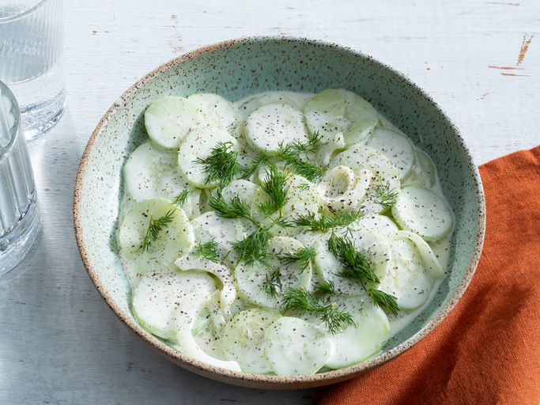

Home
Dad's Creamy Cucumber Salad

This creamy cucumber salad with crunchy slices of cucumbers, sweet onions, garlic, and
dill was my dad's recipe. It's one of our family's all-time summer favorites.
ingredients
- large cucumbers, peeled and thinly sliced
- sweet onion, thinly sliced
- tablespoon sea salt
Dressing
- 1 ½ cups mayonnaise, or more to taste
- 2tablespoons vinegar
- 1 tablespoon white sugar
- 1 teaspoon dried dill weed
- 1 teaspoon garlic powder
- 1 teaspoon ground black pepper
- Mix cucumbers, onion, and salt together in a bowl.
Cover with plastic wrap and let sit for 15 to 30 minutes.
- Turn cucumber mixture into a colander set over a bowl or in a sink. Let drain,
stirring occasionally, until most of the liquid and salt has drained, 15 to 30 minutes.
Transfer drained cucumber mixture to a large bowl.
- Whisk mayonnaise, vinegar, sugar, dill, garlic powder, and pepper for dressing
together in a bowl until smooth. Pour over cucumber mixture and stir until
coated.
- Cover with plastic wrap and refrigerate for 1 to 2 hours before serving.
- Enjoy!